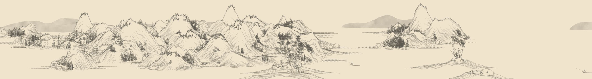
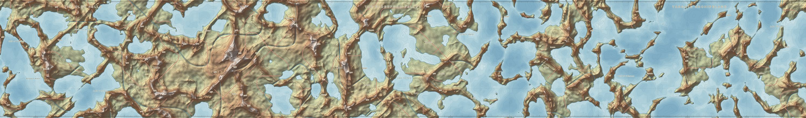
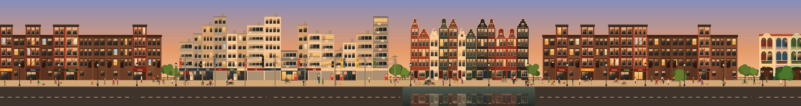

山水Endless Shan Shui
A Chinese ink landscape painted as it unrolls, with drifting mist, snow or rain and five ink tones. Open the scroll
Three procedurally generated worlds that never stop scrolling. Every mountain, coastline and facade is made the moment it comes into view, so no two visits look the same.

A Chinese ink landscape painted as it unrolls, with drifting mist, snow or rain and five ink tones. Open the scroll

A topographic map of land that doesn't exist yet: archipelagos, high fells and lake districts, with named towns and summit heights. Open the map

Shophouses, Haussmann blocks, canal houses, Tokyo side streets and brownstones, with people, pets and the light changing through the day. Walk the street